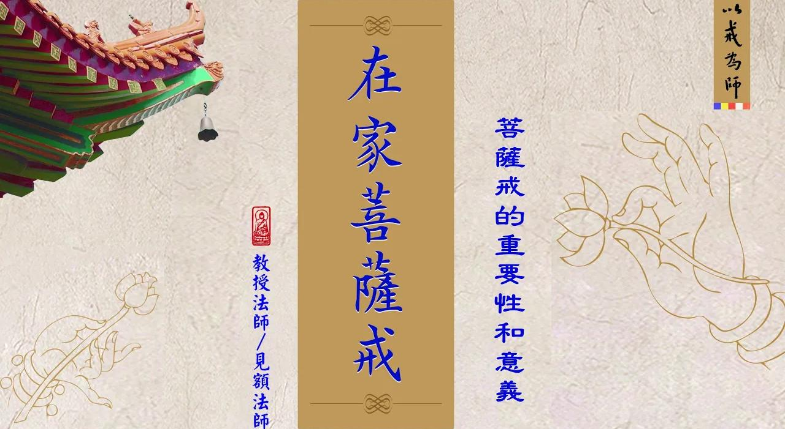
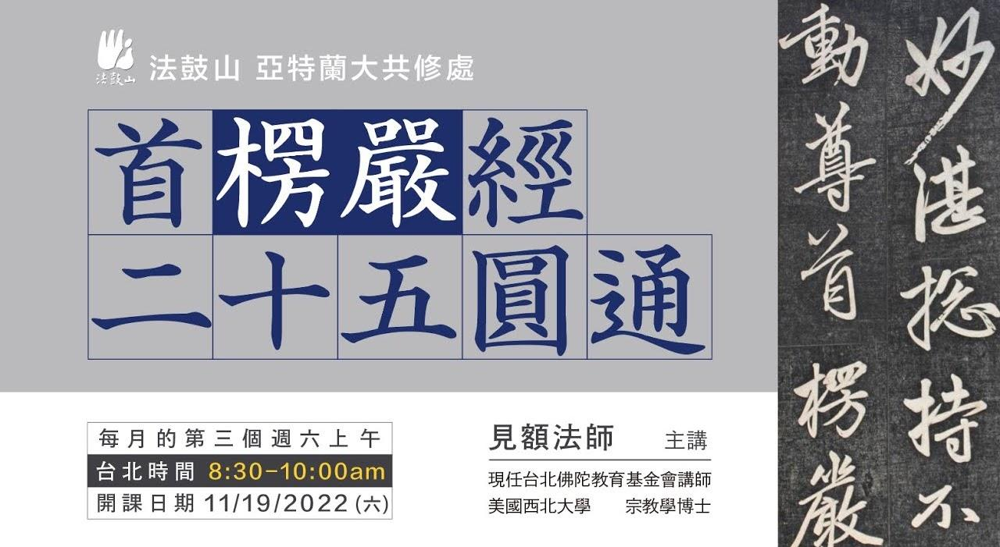

殊曼讀心
shifu-shuman.org
☰
首頁
見額法師
法訊
佛法覺音
菩薩覺旅
殊曼覺文
菩提覺見
出版著作
法語桌布下載
佛法覺音
六祖壇經
觀看影片
法華經全景
觀看影片
不在乎不要怕
觀看影片
天台教觀
觀看影片
禪修靜坐
觀看影片
法華經精要
觀看影片
空中法華
觀看影片
始終心要今說
觀看影片

在家菩薩戒
觀看影片
八關齋戒
觀看影片
專題講座、法會開示
觀看影片
佛學教理
觀看影片
大智度論
觀看影片

首楞嚴經 二十五圓通
觀看影片
讀心
觀看影片
知見：佛法釋疑
觀看影片
Buddha-Dharma in English
觀看影片
線上課程
觀看影片
佛經中的梵字音譯
觀看影片